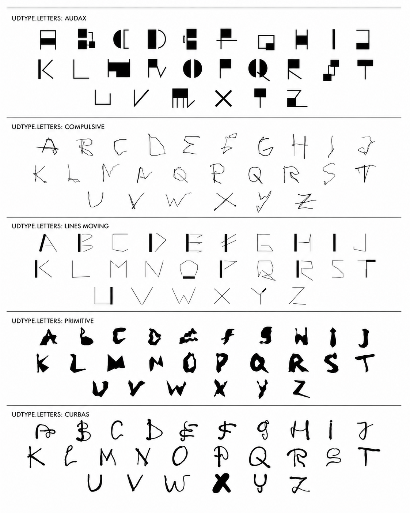

Experimental type collection
UDTYPE
Five display alphabets begin with the same question: how little information can a letter carry and still be read?
UDTYPE moves between line, gesture, fragmentation, and geometry. Every family preserves a different kind of evidence: the hand, the tool, the interruption, or the system.
Self-initiated type research
Five display systems · uppercase studies
Selected development · Audax

Selected family
01 / 05
AUDAX
An uppercase display alphabet built from hard geometry, interrupted strokes, and shifting mass. Each glyph balances recognition with rupture.
- Character set
- A–Z
- Extended set
- Lowercase · numerals · punctuation
- Classification
- Experimental display
Motion specimen
Direction / rhythm / repetition
Complete specimen
The complete system
Uppercase · lowercase · numerals · punctuation

Detail studies
A letter is also an image.
Three recurring constructions in the Audax system
Interactive specimen
Write with Audax
A–Z · spaces and line breaks supported
Collection index
Other directions
Gesture · found form · fragmentation